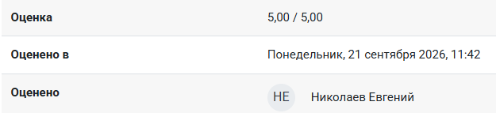

📅 Сданы две лабораторные по плюсам😲
Дата: 21 сентября 2026


Успешно закрыл обе лабораторнуе на оценку «отлично». Изучил основы c++ и условные операторы.
Теперь готов переходить к switch-case и функциям.